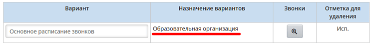
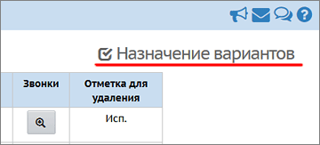
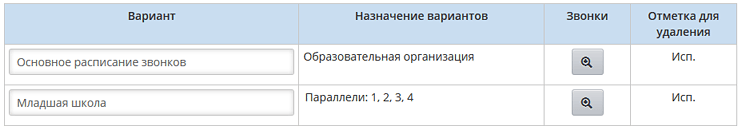

В системе всегда существует основное (базовое) расписание звонков в пределах всей школы. Если не вводить никаких других вариантов расписания звонков, то вся школа использует именно этот вариант. Об этом говорит надпись "Образовательная организация" в графе "Назначение вариантов":

Кнопка в графе "Звонки" ведёт на экран редактирования времени звонков для данного варианта (часы, минуты, порядковые номера уроков и смен).
Внимание! После создания варианта расписания звонков, нужно явно связать этот вариант с параллелью или классом с помощью кнопки Назначение вариантов:
 |
Порядок действий для добавления нового варианта расписания звонков
| 1) нажмите кнопку Добавить, в появившемся окне введите название (например, Младшая школа) и нажмите кнопку Сохранить;
|
| 2) нажмите кнопку в графе "Звонки", чтобы ввести время звонков на соответствующем экране;
|
| 3) нажмите кнопку Назначение вариантов, чтобы выбрать классы или параллели, с которыми будет связан новый вариант звонков (см. экран Назначение вариантов расписания звонков). После выбора в графе "Назначение вариантов" будут перечислены параллели и классы, с которыми связан данный вариант:
|

Принцип создания новых вариантов звонков
| · | для классов, имеющих «классический» учебный план: своё расписание звонков могут иметь отдельные параллели (напр., 1-е классы) или отдельные классы (например, 1а);
|
| · | для классов, имеющих «индивидуальный» учебный план: свой вариант расписания звонков может быть создан только для всей ИУП-параллели, а не для отдельных ИУП-классов (это связано с тем, что учащиеся из различных ИУП-классов могут быть зачислены в одну группу).
|
Работу школы по назначению вариантов расписания звонков облегчает принцип наследования:
Пусть есть расписание звонков на базовом уровне (уровень всей школы), которое по умолчанию используется во всех параллелях и классах. Далее:
| · | Для «классического» учебного плана: новый вариант расписания звонков для конкретной параллели создаётся на основе базового (т.е. новый вариант будет являться копией базового варианта). Если же нужен вариант для конкретного класса – то он создаётся на основе варианта для соответствующей параллели.
|
| · | Для «индивидуального» учебного плана: есть только один уровень наследования: новый вариант расписания звонков для ИУП-параллели создаётся на основе базового варианта.
|
Чтобы определять расписание звонков, нужно иметь право доступа Составлять расписание и определять список кабинетов школы.